NAVIGATION
TOP of Page
MAIN Page
HOME Page
PREV Page
NEXT Page
ON THIS PAGE
Map
About
Benalla City
Wangaratta City
RURAL TOWNS
Devenish
Goorambat
Winton
Winton Wetlands
Baddaginnie
Glenrowan
Wangaratta
RIVERINA AREAS
Albury-Wodonga
Federation Council
Berrigan Shire
North-West
Campaspe Shire
Moira Shire
Shepparton G.C.
Benalla R.C.
Indigo Shire
Silos & Waterways
|
MAP
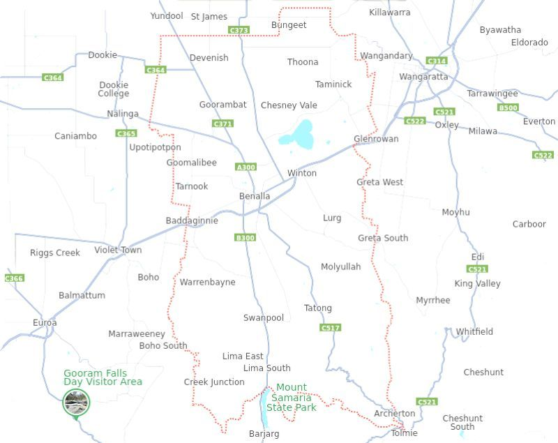
Map of Benalla Rural City, VIC
ABOUT
The Rural City of Benalla is a LGA in the Hume region of Victoria, Australia, located in the
north- east part of the state. It covers an area of 2,353 square km and has a population of 14,528.
It includes the towns of Baddaginnie, Benalla, Devenish, Goorambat, Major Plains, Swanpool,
Tatong, Thoona, Warrenbayne and Winton.
It was formed in 2002 from the de-amalgamation of the Shire of Delatite into the current rural city
and the Shire of Mansfield, the former being a merger between the latter, the Shire of Benalla and
the City of Benalla. Benalla City has the most population and is the centre of government.
TOP
MAIN
HOME
PREV
NEXT
BENALLA CITY
Benalla has a population of 10,331 and is the administrative centre for the Rural City of Benalla
LGA. It is situated on a mostly flat floodplain of the Broken River catchment situated directly to the
north and west of the Great Dividing Range. There are three major crossings of the river with
Bridge Street East being the main street in the CBD.
Industries include agricultural support services, tourism, a medium density fibreboard factory,
Thales Australia ammunition factory and aviation. As a service economy for the region, Benalla has
many large retailers, including a Coles, Woolworths, Aldi and a Mitre 10 Home & Trade. Target
Country on Bridge Street closed in April 2021.
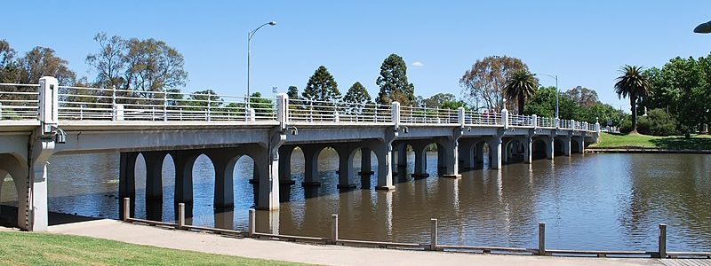
Monash Bridge on Bridge Street / Monash Highway, Benalla, VIC
Mattinbgn (talk · contribs), CC BY 3.0,
https://creativecommons.org/licenses/by/3.0 via Wikimedia Commons
Link to Benalla
Link to Benalla
Link to Benalla
Link to Benalla
Link to Benalla
Lake Benalla is an artificial lake created in 1973 from the Broken River as an ornamental feature
for the centre of the city. Broken river forms a green belt along the north–south spine of the city.
Another large artificial lake, Lake Mokoan, 7 kilometres to the north east, was decommissioned
beginning in 2009, with a wetlands area being developed for visitors. To the south of the freeway is
the heavily forested Reef Hills State Park.
TOP
MAIN
HOME
PREV
NEXT
Benalla Art Gallery at 97 Bridge Street opened in 1975. Victoria's Herald Sun newspaper
described it in 2013 as one of Victoria's top ten regional galleries, with a "striking modernist
building" designed by Colin Munro and Philip Sargeant. The gallery is a member of the Public
Galleries Association of Victoria. The gallery's original design was reduced in size, culminating in
an expansion proposal being canvassed in 2013. Artists whose work is held by the Benalla Art Gallery include Constance Stokes and Jan Hendrik Scheltema.
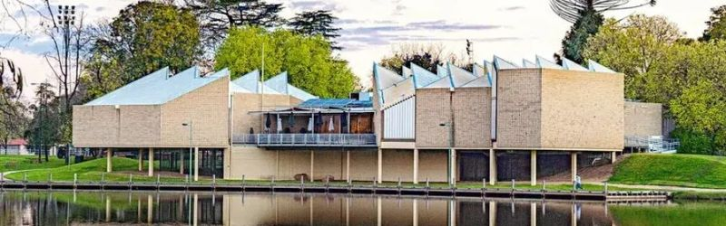
Benalla Art Gallery at 97 Bridge Street, Benalla, VIC
Link to Gallery
Link to Gallery
Benalla Ceramic Mural in Mair Street was created by skilled and unskilled artists alike with
recognised input from aboriginal groups the curvaceous terracotta clay Ceramic Mural with its
collanades, cave seats, "thongaphones" and amphitheatre invites the curious to explore its many
features. Much of the ceramic work was completed by local artist Judy Lorraine and was begun in
1983 with funding from the Australia Council Community Arts Board. The mural evokes the
structures and spaces created by the celebrated Spanish artist Antoni Gaudí.
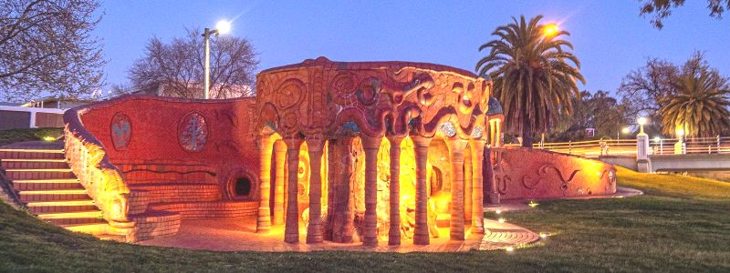
Benalla Ceramic Mural
Benalla Aviation Museum at Samaria Rd offers a fascinating look at Australia's military air
training history, from the historic home of a World War II RAAF pilot training school. Attractions
include a unique collection of military training aircraft, a number of which are fully operational and
available for passenger flights, plus many related static displays.
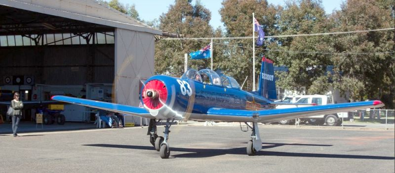
Benalla Aviation Museum off Samaria Road, Benalla, VIC
Link to Museum
Link to Museum
Benalla Migrant Camp in Hut 11, Benalla Airport saw over 60,000 migrants pass through the gates
over 18 years. There are over 200 photos that show the personal and daily lives of the camp
inhabitants. Located in one of the original huts this is a must see exhibition when in Benalla.
TOP
MAIN
HOME
PREV
NEXT
WANGARATTA CITY
Wangaratta, VIC has a population of 29,808 and is located at the junction of the Ovens and King
rivers, which drain the northwestern slopes of the Victorian Alps. Wangaratta is the administrative
centre and the most populous city in the Rural City of Wangaratta local government area.
The main shopping streets are Murphy, Reid, Ovens and Ford, offering a mix of specialty wares from high
fashion and furniture to gifts and electrical goods. This region offers culinary adventures with
markets, roadside stalls, restaurants, breweries, distilleries, wineries and gastro pubs.
There is a considerable wine and gourmet food industry in the nearby Milawa and King Valley
region. Other notable industries in the area include Australian Textile Mills formerly Bruck
Textiles, Wilson Fabrics that now occupies the old IBM facility, Merriwa Industries and Australian
Country Spinners. Previously multi-national IBM manufactured computers in Wangaratta.
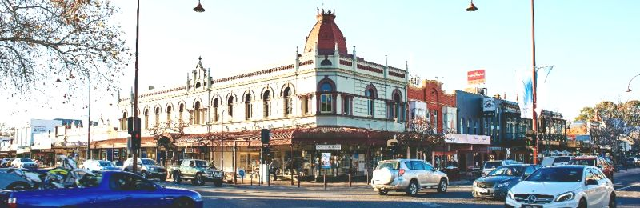
Wangaratta, VIC
Link to Wangaratta
Link to Wangaratta
Link to Wangaratta
Link to Wangaratta
TOP
MAIN
HOME
PREV
NEXT
RURAL TOWNS
Devenish, VIC has a population of 197. The Post Office opened on 9 June 1877 as Broken Creek
and was renamed Devenish in 1878. In 1883 on the arrival of the railway, the office was moved and
named Devenish Railway Station, reverting to Devenish in about 1889 as the township developed.
The Devenish concrete grain silos were built between the railway line and the main street and
opened to receive wheat in December 1943. Later the Bulk Oat storage building was built in 1965.
The first Roman Catholic Church was built in Devenish in 1883. It was decommissioned in 2005
and put up for sale. In 2023, Devenish Primary School had just one student enrolled at the school.
The Australian hot air balloon championships were held in Devenish in 2007.
 Painted Silos on Main Street / Devenish-St James Road, Devenish, VIC
Link to Devenish
Link to Devenish
Link to Devenish
Link to Devenish
Painted Silos on Main Street / Devenish-St James Road, Devenish, VIC
Link to Devenish
Link to Devenish
Link to Devenish
Link to Devenish
Goorambat, VIC and the surrounding area has a population of 297. The Post Office opened on 17
March 1879 and the office named Goorambat Railway Station opened in 1883. Goorambat was
later renamed Goorambat East and around 1909 Goorambat Railway Station was renamed to Goorambat.
Queen Elizabeth II visited Goorambat in 1954 as part of her Victorian Tour and she stayed over in
her royal carriage for one night. The Mechanics Institute hall, commonly known as the Goorambat
Hall, opened on 18 September 1888 and is still in current use. Goorambat Primary School opened
in 1888 and closed in 2010.
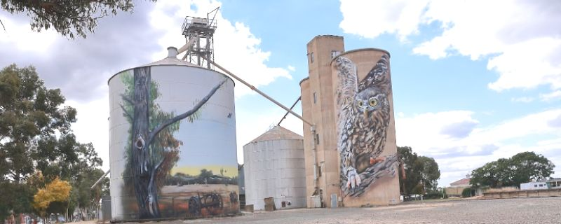
Painted Silos off Samaria Road, Goorambat, VIC
Link to Gooramabat
Link to Gooramabat
Gooramabat Church
Link to Silos
Link to Silos
Link to Silos
TOP
MAIN
HOME
PREV
NEXT
Winton, VIC has a population of 108. The town of Winton was proclaimed on 25 February 1861
and named after Winton, Cumbria. The Winton Hotel was mentioned in The Age newspaper as early as
August 1860 then de-licenced around 1950 and turned into an cafe. Winton has been the home to the
Winton Motor Raceway since 1961.
Winton Raceway, VIC
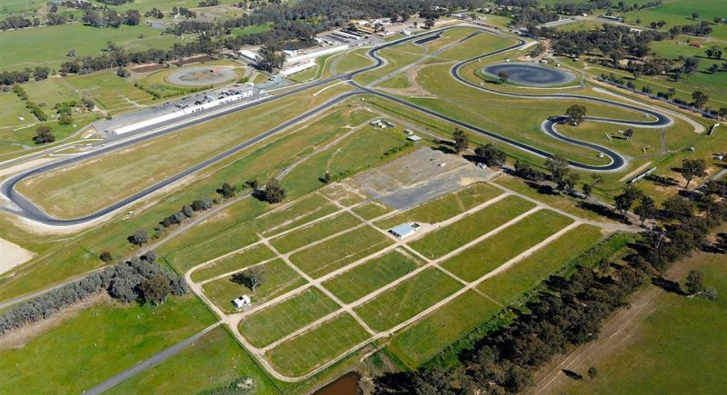
Winton Motor Raceway on the Winton-Glenrowan Road, Winton, VIC
Link to Raceway
Link to Raceway
Link to Raceway
Link to Raceway
Winton Wetlands, VIC is an interesting location containing views across lakes with drowned
trees, lowlands with with unusual vegetation and roadways through the scenery. I encountered
three small grey kangaroos pacing alongside the car when I went through, plus many waterbirds,
parrots and hawks.
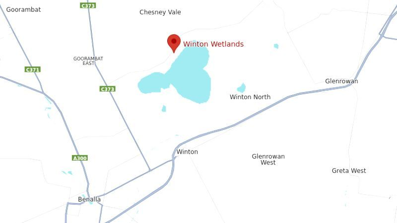
Map of the Winton Wetlands on the Lake Mokoan Road, Chesney Vale, VIC
Link to Wetlands
Link to Wetlands
Link to Wetlands
Link to Wetlands
TOP
MAIN
HOME
PREV
NEXT
Baddaginnie and the surrounding area has a population of 308 and is situated in mainly flat
unforested country, one km west of Baddaginnie Creek. The town was surveyed in 1857, named
after the nearby Baddaginnie Creek, but settlement was slow, a Post Office finally opening on 16
September 1879. A railway station was open and served passengers until July 1978.
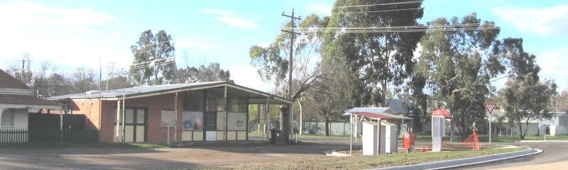
Baddaginnie Store (now an Op Shop) on Palmerston Street in Baddaginnie, VIC
By Mattinbgn - Own work, CC BY-SA 3.0,
https://commons.wikimedia.org/w/index.php?curid=4557100
Link to Baddaginnie
Link to Baddaginnie
Glenrowan, VIC has a population of 1,049 and was named after farmers James and George Rowan
who ran farms in the area between 1846 and 1858. The township was settled in the late 1860s with
the Post Office opening on 22 February 1870. The local railway station opened in 1874 and closed
to passengers in 1981.
It is famous for the bushranger Ned Kelly, who made his last stand and was eventually captured
there in 1880 after a siege and shootout with police. The town gives its name to the Glenrowan
wine region which was formally defined in 2003, with the first grape vines planted in 1866.
Edward "Ned" Kelly (December 1854 – 11 November 1880) was an Australian bushranger,
outlaw, gang leader and convicted police-murderer. One of the last bushrangers, he is known for
wearing a suit of bulletproof armour during his final shootout with the police.
Link to Glenrowan
Link to Glenrowan
Link to Glenrowan
Link to Glenrowan
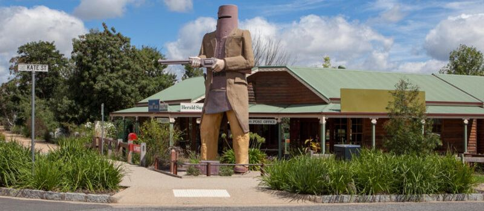
Ned Kelly Statue at Glenrowan, VIC
TOP
MAIN
HOME
PREV
NEXT
|